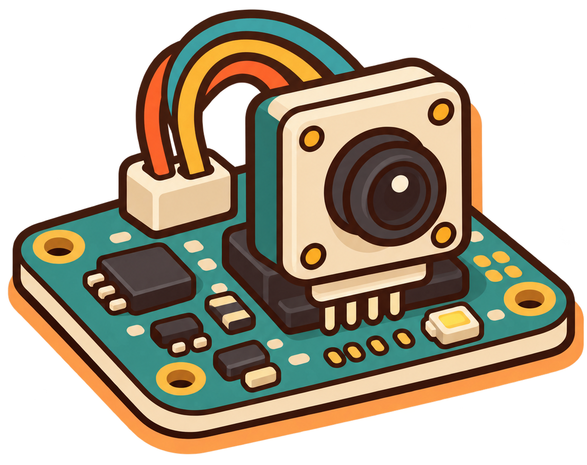

Original Project

Color Vision first began as a hardware-based graduation project focused on recognizing colors
Color Vision is a web application designed to help users explore colors from images in a simple and interactive way. Users can upload an image, select any color, and instantly view its name, HEX, and RGB values
The same idea, reimagined for the web

Color Vision first began as a hardware-based graduation project focused on recognizing colors
The idea was later redesigned as a web application, making color exploration simpler, more accessible, and easier to use
Found a problem or have a suggestion?
Send us a message.
Thanks for your feedback. We'll get back to you soon!